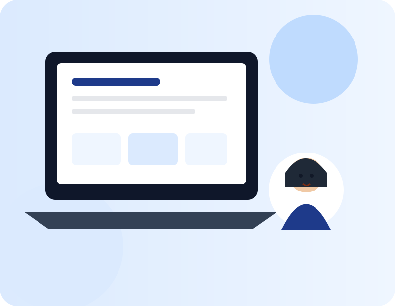
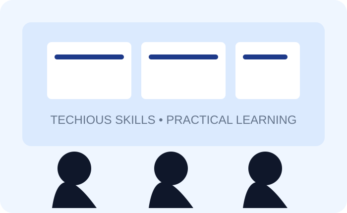

Our Vision
To help more people approach technology with confidence and turn digital skills into meaningful opportunities.
Techious Skills makes computer learning practical, clear and useful — from everyday computer basics to Microsoft Office, internet, email and online productivity.

Techious Skills is a practical digital-skills training platform created for learners who want to become confident using computers at school, at work and in everyday life.
Our lessons are structured around hands-on practice. Instead of only learning what a button does, students learn how to complete useful tasks — write a document, build a spreadsheet, create a presentation, send professional emails, find credible information online and use everyday digital services.
See what you'll learn →To help more people approach technology with confidence and turn digital skills into meaningful opportunities.
To deliver accessible, practical and professional computer training that learners can immediately apply in real situations.
Our Computer Appreciation programme covers the essential skills from first-time computer use through modern online productivity.
Understand the computer, mouse, keyboard, desktop, files and correct shutdown routines.
Type, edit, format and prepare professional documents, letters and simple reports.
Work with rows, columns, formulas, functions, formatting and simple budgets.
Create clean slides, add visuals and present ideas with confidence.
Browse, search effectively, evaluate sources and practise safer online habits.
Create an account, compose professional emails and manage an inbox.
Organise, rename, move, copy and manage digital files with confidence.
Explore cloud storage, productivity tools, video calls and everyday digital services.
Simple pricing. Practical learning. A certificate on completion.
For learners building a strong computer foundation.
For learners ready to use the internet and digital tools confidently.
Everything in Beginner + Advanced, with a complete learning pathway.
Professional learning should feel focused, welcoming and hands-on. These visuals represent the Techious Skills learning environment.



Lessons are paired with tasks so learners practise the same skills they will use outside the classroom.
Complex concepts are broken into simple steps, with room to practise and ask questions.
From Word and Excel to email and cloud tools, the programme focuses on everyday digital confidence.
Learners who complete the programme receive a certificate recognising their training.
“I used to avoid Excel because it looked complicated. The practical exercises made it much easier to understand.”
Amaka O.Computer Appreciation learner“The lessons were clear and I liked that we actually practised what we were taught instead of only taking notes.”
David K.Digital Skills learner“I can now create documents, presentations and send professional emails without asking someone to do it for me.”
Faith M.Computer Appreciation learnerEverything you need before choosing your training package.
The programme is suitable for beginners and anyone who wants stronger everyday computer and digital skills. The course materials are designed for learners age 12 and above.
No. The Beginner package starts from the fundamentals. Learners who already have a foundation can choose the Advanced package or the Complete Package.
Successful learners receive a certificate of completion. The Complete Package also includes practical projects across the full eight-module pathway.
Choose Beginner for core computer and Microsoft Office skills, Advanced for internet and digital productivity skills, or Complete for all eight modules.
Send your details and tell us which package you are interested in. We’ll help you take the next step.